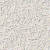

More Detailed Research Portfolio
Annotated collection of my research papers spanning computational neuroscience, machine learning, computer vision, and deep learning. All papers are available openly via the links below.

We propose that pyramidal neurons learn sequences by integrating input over time through active dendrites and NMDA spikes. This theory explains why neurons have thousands of synapses and provides a framework for understanding sequence memory in cortical networks.
A mathematical theory of sparsity, neurons and active dendrites that explains how individual neurons can recognize hundreds of unique patterns and how networks perform robust computation.
Theoretical analysis of sparse distributed representations (SDRs) and their mathematical properties, demonstrating computational advantages for learning and memory in neural networks.
Pioneering work in real-time 3D hand tracking, demonstrating practical computer vision applications that preceded modern motion control interfaces by over a decade.
Comprehensive framework for modeling and recognizing human gestures using probabilistic methods, combining verbal and body language analysis for enhanced human-computer interaction.